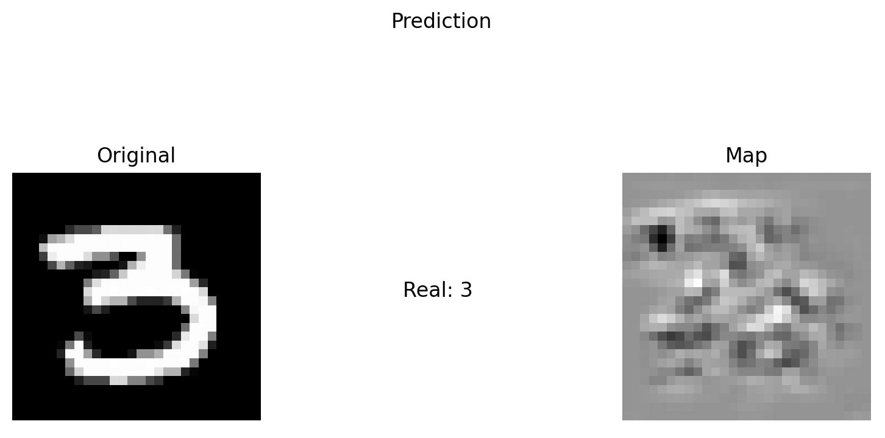
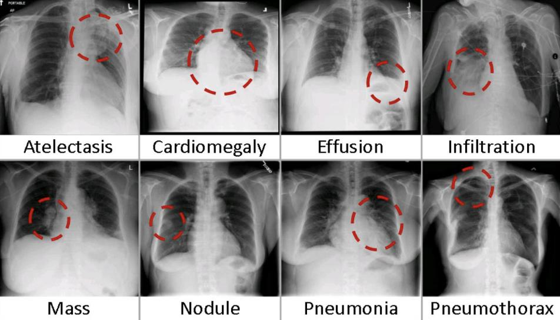
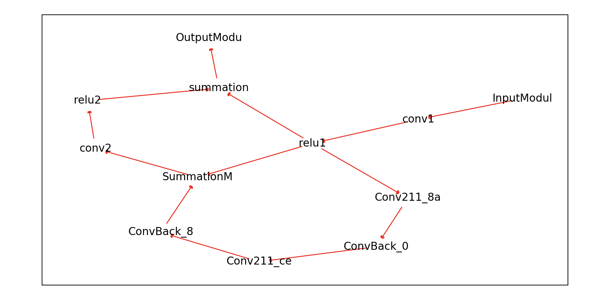
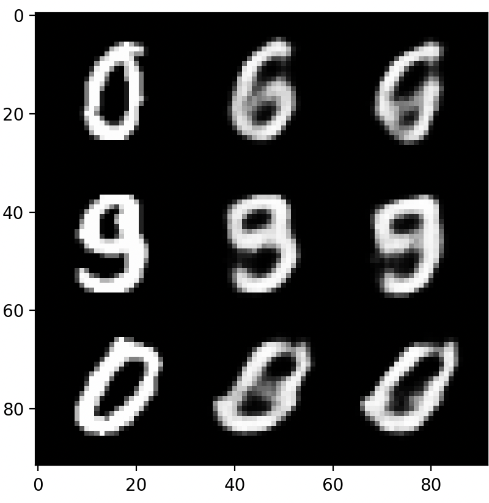

Saliency Maps for AI Explainability: Utilizes
gradient-based methods for explainability. This tool allows you to see
which parts of the image the model is most “paying attention to,”
minimizing spurious correlation and overfitting. Coded from scratch in
Python with Pytorch. https://github.com/JBlitzar/saliency

NIH Chest X-ray Dataset Pneumonia Classification: I created a simple CNN to classify images from the NIH Chest
X-ray Dataset as either having or not having pneumonia. I was able to
get 95% training accuracy and 82% validation accuracy. https://github.com/JBlitzar/chest-xray

Genetic Graphs Neural Architecture Search System:
Uses genetic algorithms to construct and evolve neural networks
represented as Directed Acyclic Graphs in order to determine the
optimal architecture. Coded from scratch in Python with Pytorch,
utilizing the Pytorch Lightning training framework. https://github.com/JBlitzar/genetic-graphs/blob/main/moduledag.py

Symbolic Computation Essentially a derivative
calculator. I created my own symbolic computation framework and
applied knowledge from my calculus courses to recursively and
symbolically (like a human, rather than estimating numerically)
evaluate complex derivatives. Coded from scratch in Python with no
external libraries.
https://github.com/JBlitzar/derivative/blob/main/modules.py https://github.com/JBlitzar/derivative
Constructive Counterfactuals for Targeted Finetuning:
This project introduces original research about Constructive
Counterfactuals, based on Zheng Dai’s research. It demonstrates
improved efficiency in finetuning by selecting only the most important
samples, reducing computational cost.
https://github.com/JBlitzar/constructive-counterfactuals/blob/main/README.md
